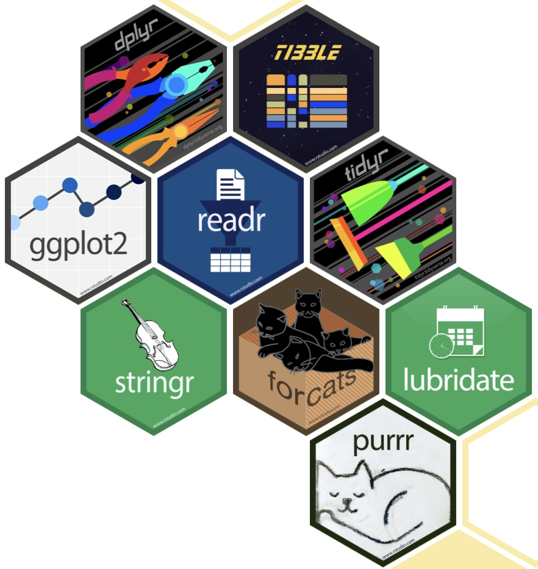

The tidyverse is a collection of R packages that share an underlying design philosophy, grammar, and data structures. The tidyverse is designed to make data science faster, easier, and more fun!
https://www.tidyverse.org

Tidyverse is a very important package that contains several other packages that are used for data manipulation and visualization. This provides a consistent, efficient, and user-friendly framework for data manipulation, visualization, and analysis. Here are some key reasons why learning the tidyverse is beneficial:
Unified and Consistent Approach : The tidyverse is a collection of R packages (e.g., ggplot2, dplyr, tidyr, readr, purrr, tibble) that follow a consistent syntax and philosophy. Functions work seamlessly together, reducing the learning curve compared to working with disparate R packages.
Data Wrangling Made Easy : dplyr provides intuitive functions like filter(), mutate(), select(), and group_by() to transform and manipulate data efficiently. tidyr helps reshape and clean messy data using functions like pivot_longer(), pivot_wider(), and separate().
Powerful Data Visualization : ggplot2 is one of the most popular visualization tools, allowing you to create elegant, customizable plots using a layered grammar of graphics. ggplot2 makes it easy to create complex visualizations with minimal code.
Efficient Data Import & Export : readr enables fast reading and writing of CSV, Excel, and other data formats without unnecessary conversions.
Functional Programming with Purrr : purrr provides functions like map() to perform operations on lists and apply functions efficiently.
Reproducibility and Readability : The pipe operator (%>%) makes code more readable by allowing operations to be chained together in a logical sequence. Code written using the tidyverse is often easier to understand and reproduce.
Wide Adoption and Strong Community Support : The tidyverse is widely used in academia, research, and industry, with extensive documentation and community support.
By mastering the tidyverse, you can streamline your data science workflow, making data manipulation, visualization, and analysis more intuitive and efficient.
As we go through this course, you will use several of these packages many times. Here is a list of the four main tidyverse packages we will be using in this course:
readr
The readr( ) package makes it easy to read in files that contain data. It can read in files that are in CSV, TSV, XLS, and other formats. While there are built in base commands that can do this, the readr package is faster and more consistent.
tibble
The tibble package is a modern version of the data.frame. Tibbles are easier to read and work with than data.frames. Tibbles also have an enhanced print( ) method which makes them easier to use with large datasets containing complex objects.
We will use the tibble package to create data frames as we learn to read in data.
dplyr
The dplyr package is a grammar of data manipulation. The dplyr package makes it easy to analyse data using commands such as filter( ), select( ), mutate( ), arrange( ), and summarize( ).
We will use the dplyr package to manipulate data frames as we learn to clean data.
ggplot2
The ggplot2( ) package is a grammar of graphics. The ggplot2 package makes it easy to create beautiful and informative plots. This will be the primary method we will use to create vizualizations in this course.
We will go over several different types of plots that can be created using ggplot2.
Here are some other tidyverse packages that are not as commonly used in this course, but are still very important to know:
tidyr
The tidyr package makes it easy to tidy data. The tidyr package makes it easy to convert data from wide to long format.
This type of data cleaning will not be used as much in this course, but it is a very important concept to understand and is addressed in a more advanced course.
broom
The broom package makes it easy to work with statistical models. The broom package makes it easy to tidy up the output of statistical models.
We will revisit this package when we delve into modelling a data set.
purrr
The purrr package is a functional programming toolkit. The purrr package makes it easy to work with lists and vectors.
stringr
The stringr package makes it easy to work with strings. The stringr package makes it easy to manipulate strings.
forcats
The forcats package makes it easy to work with factors. The forcats package makes it easy to manipulate factors.
lubridate
The lubridate package makes it easy to work with dates and times. The lubridate package makes it easy to manipulate dates and times.
Installation
To install the tidyverse package, you can use the following command:
# If needed, you can install tidyverse by using the following command:# install.packages("tidyverse")# Once the package is installed, you can load it up using the library command:library(tidyverse)
── Attaching core tidyverse packages ──────────────────────── tidyverse 2.0.0 ──
✔ dplyr 1.1.4 ✔ readr 2.1.5
✔ forcats 1.0.0 ✔ stringr 1.5.1
✔ ggplot2 3.5.1 ✔ tibble 3.2.1
✔ lubridate 1.9.4 ✔ tidyr 1.3.1
✔ purrr 1.0.4
── Conflicts ────────────────────────────────────────── tidyverse_conflicts() ──
✖ dplyr::filter() masks stats::filter()
✖ dplyr::lag() masks stats::lag()
ℹ Use the conflicted package (<http://conflicted.r-lib.org/>) to force all conflicts to become errors
You can see that we now have access to the packages that we described above and by looking at the Packages tab in RStudio. You can see that the tidyverse package is loaded up and ready to use.
Conclusion
This is one of the more important packages to get to know if you want to become a data scientist. This package is constantly being updated and improved, so it is important to stay up to date with the latest changes.
You can find the latest updates and information on the tidyverse website: